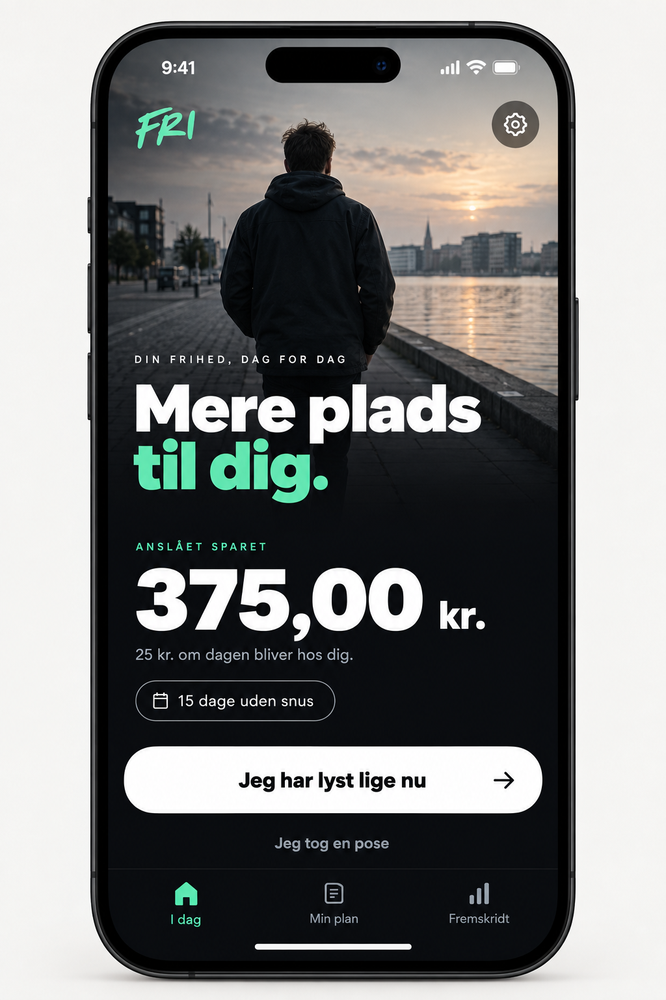
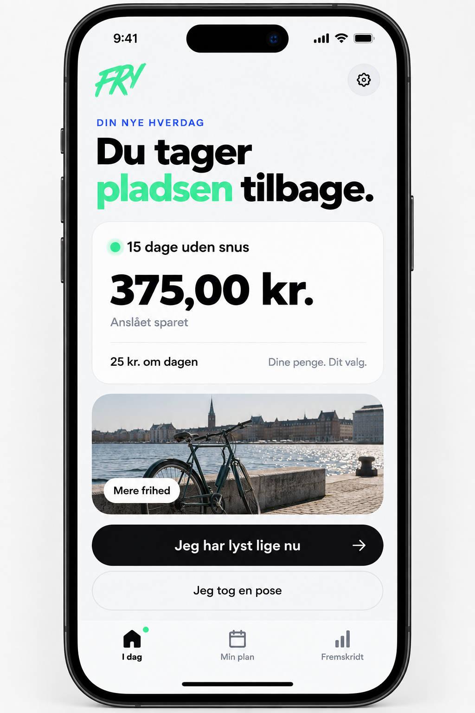
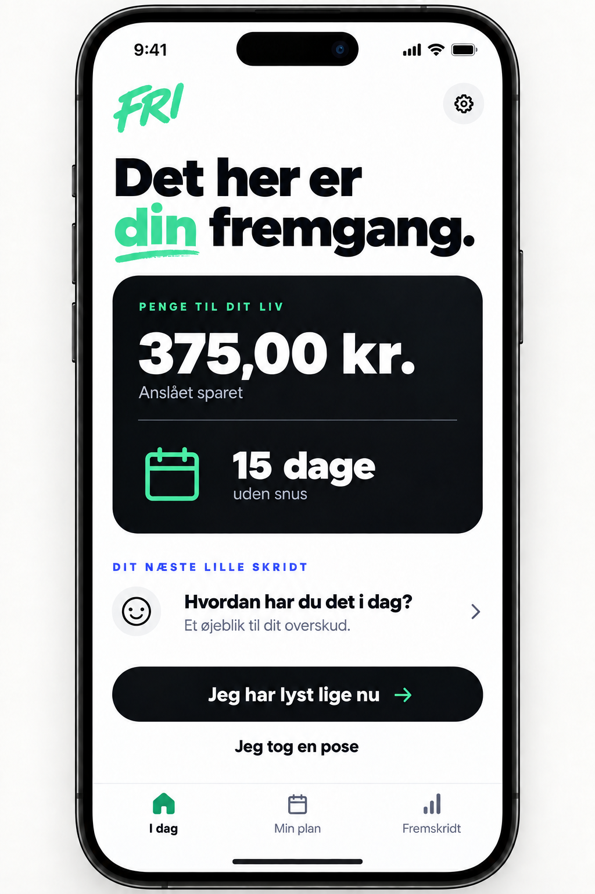
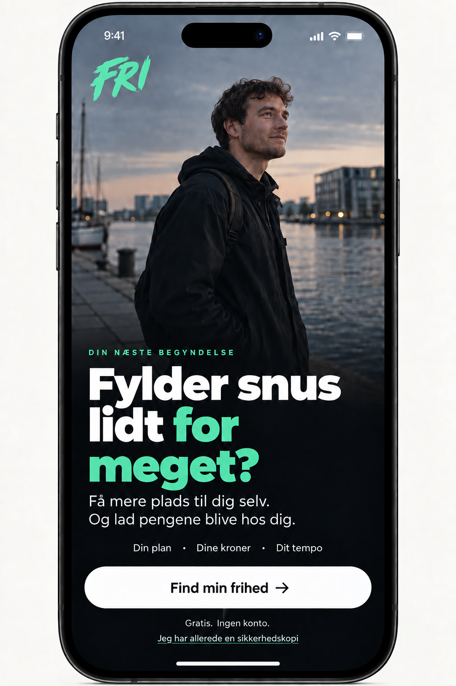

FRI. A new visual direction.
Four ImageGen concepts based on the typography, contrast, mint accents, rounded controls and editorial photography observed on eliasbonde.dk. Original FRI concepts; no affiliation. Static design exploration, not changes to the running app.

01 · Dark homeAtmosphere and strong contrast.
02 · Light homeAiry, approachable, editorial.
03 · Mixed home — recommendedSavings and daily actions take priority.
04 · OnboardingA personal, focused first impression.Design notes · Generation and edit prompts